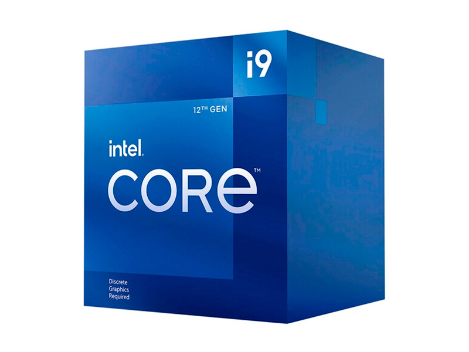
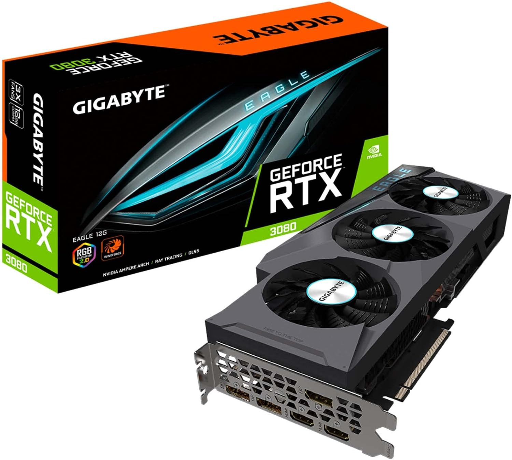
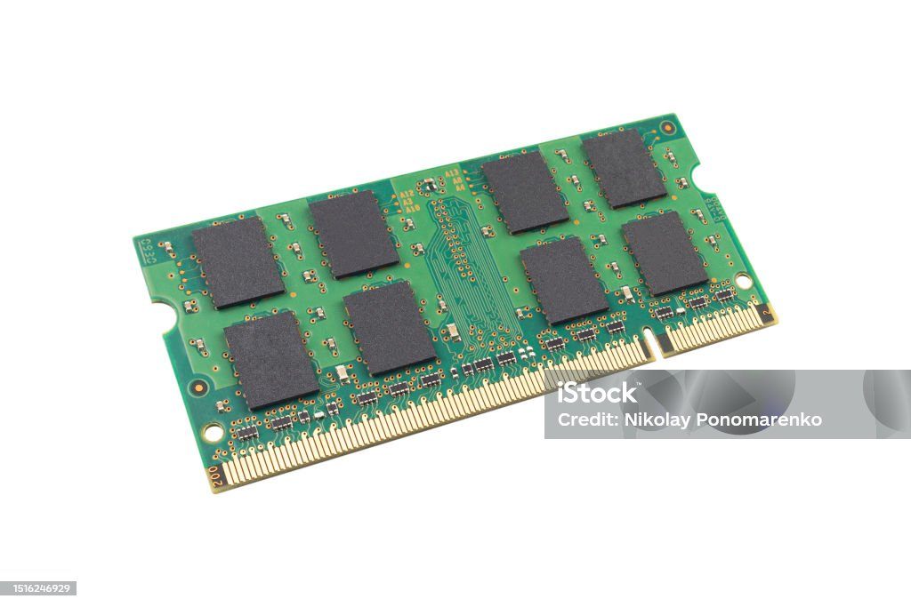
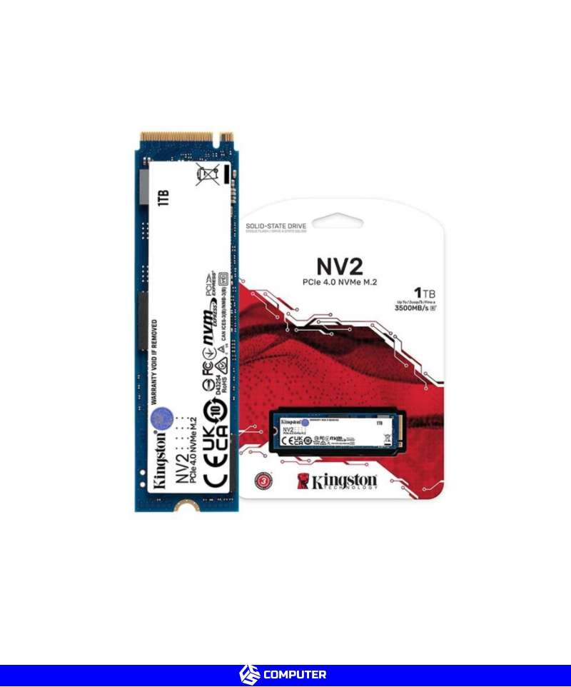

Procesadores
Procesadores de última generación para tareas cotidianas, gaming o trabajo profesional.
- Intel Core i9, i7, i5
- AMD Ryzen 9, 7, 5
- Soluciones de alto rendimiento y eficiencia energética
En TechParts, ofrecemos una amplia gama de productos de alta calidad para tu computadora. Desde procesadores, tarjetas gráficas, memorias RAM y mucho más, tenemos lo que necesitas para mejorar el rendimiento de tu PC.
Todos nuestros productos están diseñados para brindar el máximo rendimiento y durabilidad, ya sea para tareas básicas, gaming o trabajo profesional.
Procesadores de última generación para tareas cotidianas, gaming o trabajo profesional.
Potencia tu PC con tarjetas gráficas de alta gama, perfectas para gaming y edición de videos.
Aumenta la velocidad de tu equipo con nuestras memorias RAM de gran capacidad y alta velocidad.
Mejora la velocidad de tu PC con discos SSD rápidos y duraderos. Olvídate de los tiempos de carga largos.
¿No sabes qué producto elegir? Nuestro equipo experto está listo para ayudarte. Ya sea que necesites un componente específico o un paquete completo para tu PC, estamos aquí para aconsejarte.
Contáctanos a través de nuestras redes sociales o en el chat en línea para recibir la mejor recomendación según tus necesidades.



